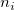
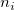
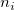
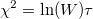
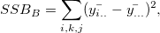

/math-8ce4b16b22b58894aa86c421e8759df3.png "k") を因子Aのレベル数、
を因子Aのレベル数、/math-83878c91171338902e0fe0fb97a8c47a.png "p") を因子Bのレベル数、 を因子Aのレベルiの被験者数、をj番目の被験者と因子Aのレベルiの観測とします。
を因子Bのレベル数、 を因子Aのレベルiの被験者数、をj番目の被験者と因子Aのレベルiの観測とします。
内容 |
一元配置、二元配置のバランスのとれた繰り返し測定のある分散分析のアルゴリズムは、Repeated Measures ANOVA.pdfを確認してください。
モデルの考え：被験者要因Aと他の被験者要因Bの二元配置混合モデルのRM ANOVA
を因子Aのレベル数、を因子Bのレベル数、 を因子Aのレベルiの被験者数、をj番目の被験者と因子Aのレベルiの観測とします。
誤差行列を次のように定義します： 仮説行列は： 遮断の仮設行列は：
ここで
および
自由度は/math-fb02db9e63440cd2e05d80f42d461504.png "d_E = N-k") および
および/math-74801925a7dfba9046ad170e97859025.png "d_H = k-1") で計算されます。
で計算されます。
因子Aのレベル平均のベクトルをとし、とします。
対比行列は
を検定するために、Wilks' Lambda, Hotelling-Lawley Trace, Pillai's Trace, Roy's Largest Rootを計算できます。The SS&CPs are:
Note:全ての二乗和がタイプⅢをベースにして計算されます。
帰無仮説は SS&CPs は:
計画行列は
/math-511b707f131edaf39ee2a6a958a35e85.png "X = \begin{bmatrix}
1_{n_1\times 1} & 1_{n_1\times 1} & & & \\
1_{n_2\times 1} & & 1_{n_2\times 1} & & \\
\vdots & & & \ddots & \\
1_{n_k\times 1} & & & & 1_{n_k\times 1}
\end{bmatrix}.")
残差行列はで生成されます。
を、次のようにセットできるの直行行列とします。
のようにします。
ここで
Mauchly's W統計は
カイ二乗検定値は、自由度のです。
/math-6cb8aa6f3d4995e2a9949f4118384329.png "\varepsilon_{gg} = \frac{tr(T)^2}{tr(T^TT)d}.")
基本的な計算
/math-d77c0dc584970f5ddf3f8c76ddddfb58.png "SS_T = \sum_{i,k,j}(y_{ikj}-\bar{y_{...}})^2,") 自由度
自由度
自由度
/math-3d7f70012333abcbb9b3f0a197c08b7d.png "SS_B = \sum_{i,k,j}(y_{ikj}-\bar{y_{ik.}})^2,") 自由度
自由度
ここで
/math-e38f8fe6d7ffb147886aed2f6b95877d.png "\bar{y_{i..}} = \frac{1}{n_ip}\sum_{k,j}y_{ikj}, \bar{y_{...}} = \frac{1}{Np}\sum_{i,k,j}y_{ikj}, \bar{y_{..j}} = \frac{1}{N}\sum_{i,k}y_{ikj}, \bar{y_{i.j}} = \frac{1}{n_i}\sum_{k}y_{ikj}, \bar{y_{ik.}} = \frac{1}{p}\sum_{j}y_{ikj}, N = \sum_{i=1^{k}}n_i .")
自由度
自由度
自由度
自由度
/math-ad771ad1001b53a2e0ba9067e8b72e41.png "SSB_{int0} = (X_{A}^{T}X_{A})^{-1}X_{A}^{T}Y ,") 自由度 ここで は影響Aに関連した計画行列で、 はインデックスデータを代理する行列 です。
自由度 ここで は影響Aに関連した計画行列で、 はインデックスデータを代理する行列 です。
 自由度
自由度
Originでは、平均比較にさまざまな方法があり、これはocstat_dlsm_mean_comparison() 関数を使って行っています。
複数の平均の比較法の2種類がOriginに含まれています。
シングルステップ法これは、Tukey-Kramer, Bonferroni, Dunn-Sidak, Fisher’s LSD, Schefféを含む、平均がどの程度違うのかを示すために信頼区間を作成します。
ステップワイズ法Holm-Bonferroni 、Holm-Sidak 検定を含む仮説検定を実行します。